三方石観音/福井県
珍日本紀行でもお馴染み、三方石観音は三方五湖を臨む山中にある。
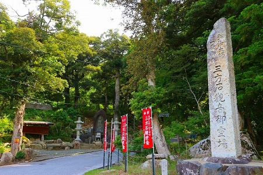
弘法大師が一晩で大きな岩に観音様を彫刻した、という言い伝えがある古刹だ。
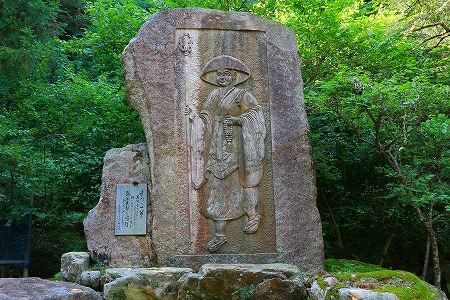
鬱蒼とした境内へは緩やかな坂を上っていく。
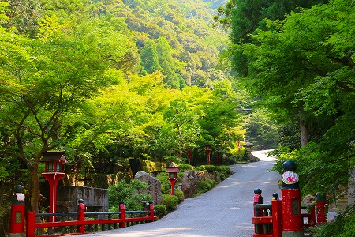
しばらくすると石段の向こうに本堂が見えてくる。
中々雰囲気の良いところだ。
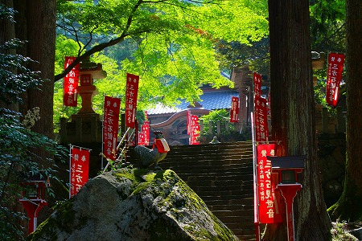
岩の上に鶏が。
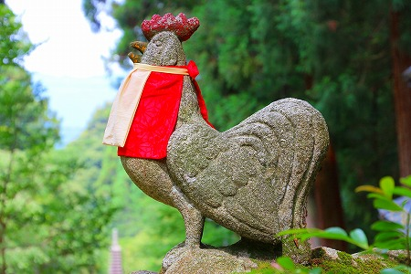
言い伝えによると弘法大師が観音様を彫っている途中、朝を告げる鶏の声を聞いて下山したのだとか。
そのとき観音サマは右手だけ彫り残したので片手観音と呼ばれているのだそうな。
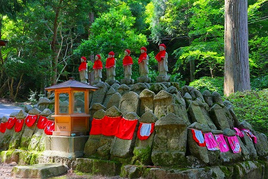
階段を登ると本堂が見えてくる。
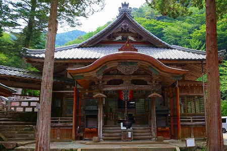
本堂には手型が置かれていた。
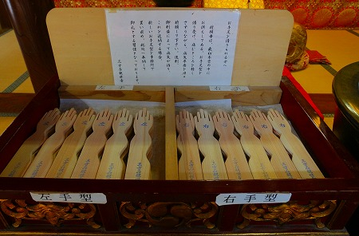
弘法大師が片手を彫り残した観音サマにちなんで手の病の平癒にご利益がある寺として信仰を集めているのである。
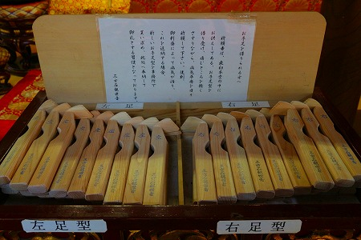
ついでに足も治しちゃう。ちゃあんと左右あるのが細かいですね。
本堂は弘法大師作の観音サマが刻まれた巨石を覆うようにして建っている。
いわば巨石の覆屋のような状態なのだ。
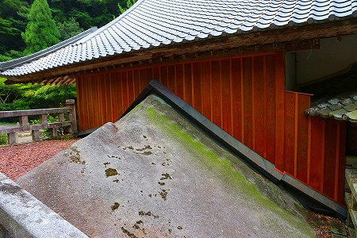
本堂の隣には小ぶりなお堂が建っている。
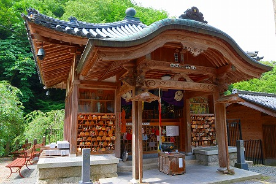
その名をお手足堂という。
お堂の中にはこれでもか！とばかりに手形足型が積み上げられている。
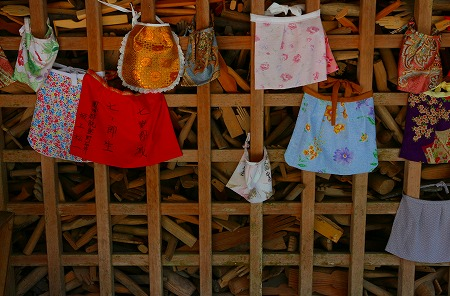
こんなに手足の病に悩んでいる人がいるのか！
…と驚くほどの数である。
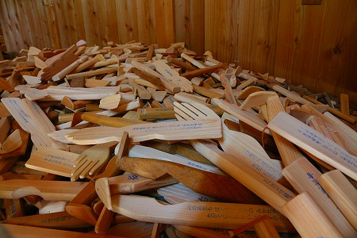
うずたかく積まれた大量の手型足型。
壁にかけてあるとか、箱に詰まってるとかのレベルじゃなくて文字通りお堂の中身一杯に積み上げられているのだ。
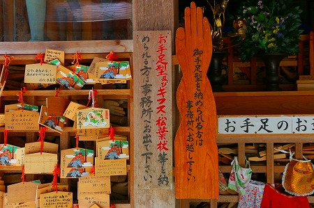
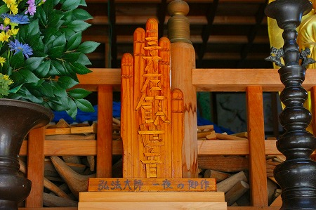
足の病が平癒した暁に奉納される松葉杖もご覧の通り。
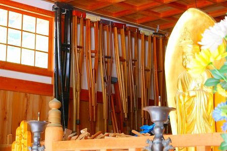
定期的に何らかの形で処分するのだろうが、それにしても大変そうだなあ。
手型足型の上空には堂内を横断するように龍神が飛んでいた。
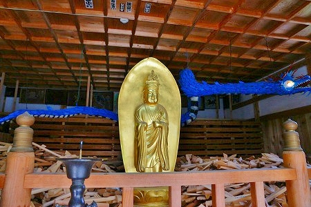
弘法大師ゆかりの名刹であり、民間信仰の牙城でもあるこの寺において何故かこの龍神だけが香ばしいテイストを放っている。
眼には電球。
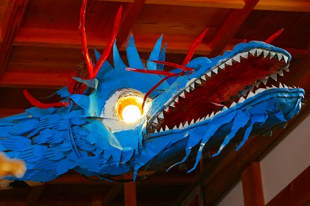
おおお、よく見たら鱗が全部手型じゃないか！
凄い！
人々の願いを全身に纏っているんだね。
古い手型足型はガラスケースに収められている。
歴代の名作、ということなのだろうか。中には乳絵馬も混ざっているぞ、何でもアリなのか？
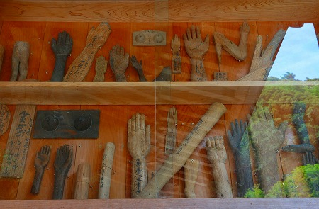 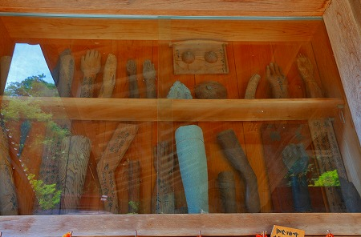
全てハンドメイドのもので、既製品の手型足型に比べ奉納する人たちの真剣味が一段も二段も上に感じられる。
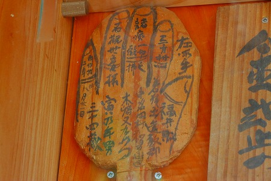
書きたいことが多すぎて団扇みたいになっちゃってる手型。
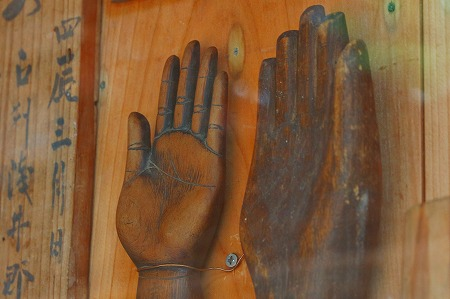
手や指のシワが妙にリアルな手型。
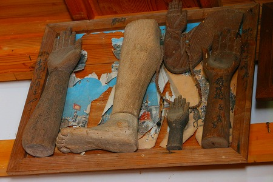
絵馬に貼り付けられた手型足型。
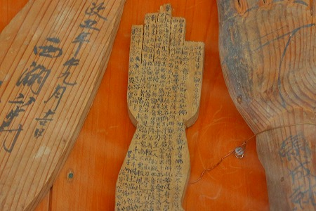
呪文のように文字が書き込まれている手型。
まるで檻に閉じ込められて呻いているように思えてゾッとしてしまう。
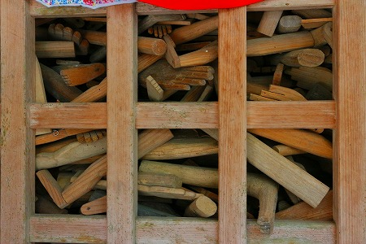
これだけ強烈な光景が個人の意思によってデザインされたものではない、という点が興味深い。
今でこそお寺側が手型足型を用意しているが、最初は人々の自発的な奉納だったはずだ。
ところが奉納者にしても自分の病が良くなりますように、という一点のみにおいて手型なり足型を奉納するわけで、手型足型がうずたかく積まれたビジュアルを作ろうと思っているわけではないのだ。
集団の無意識が生み出した光景。
お寺は弘法大師の片手観音のストーリーを用意するだけ、奉納者は自分のためにひとつ奉納するだけ。
その結果がこの眺めなのだ。
篤い信仰心が生み出した光景、といえば聞こえはいいがそんな小奇麗な言葉では収まりきれない情念のようなものの恐ろしさを感じてしまう。
2013.06.
珍寺大道場 HOME